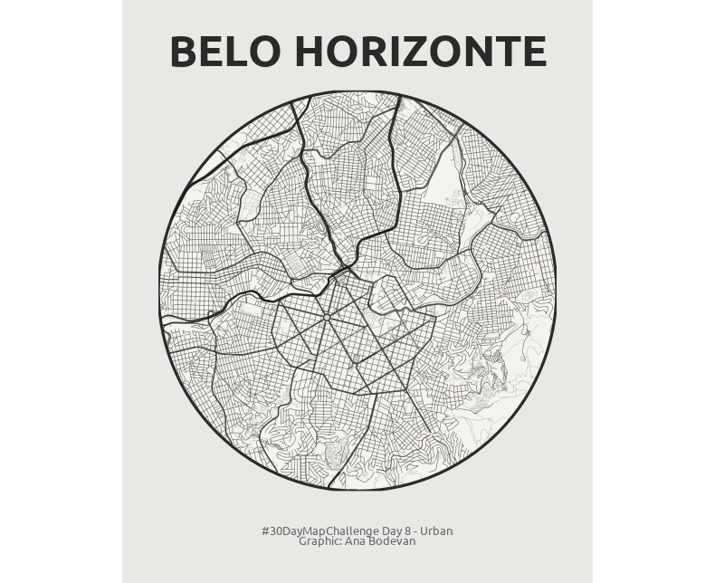

Code
library(osmdata)
library(sf)
library(ggplot2)
library(dplyr)
library(geobr)
library(ggtext)
library(showtext)Ana Luisa Bodevan
Well, I am late already. For today, we will make a quick map of my hometown, Belo Horizonte, using Open Street Map data and the geobr package.
# Get Belo Horizonte municipality boundary from geobr
bh_boundary <- read_municipality(code_muni = 3106200, year = 2020)
# Define center point (approximate center of BH downtown)
center_lon <- -43.9378
center_lat <- -19.9167
# Create a circular boundary (radius in meters)
radius <- 5000 # 5km radius - adjust as needed
# Create center point and transform to UTM
center_point <- st_point(c(center_lon, center_lat)) %>%
st_sfc(crs = 4326) %>%
st_transform(crs = 31983)
# Create circular boundary
circle <- st_buffer(center_point, dist = radius)
# Get bounding box for OSM query
circle_wgs84 <- st_transform(circle, crs = 4326)
bbox <- st_bbox(circle_wgs84)
# Get all roads within the bounding box
roads <- opq(bbox = bbox) %>%
add_osm_feature(key = "highway") %>%
osmdata_sf()
roads_lines <- roads$osm_lines# Transform roads to UTM
roads_utm <- st_transform(roads_lines, crs = 31983)
# Clip roads to circular boundary
roads_clipped <- st_intersection(roads_utm, circle)
# Transform back to WGS84 for plotting
roads_plot <- st_transform(roads_clipped, crs = 4326)
circle_plot <- st_transform(circle, crs = 4326)
# Classify roads by type for different styling
roads_plot <- roads_plot %>%
mutate(road_type = case_when(
highway %in% c("motorway", "trunk") ~ "major",
highway %in% c("primary", "secondary") ~ "medium",
highway %in% c("tertiary", "residential", "unclassified") ~ "minor",
TRUE ~ "other"
))ggplot() +
# Background circle
geom_sf(data = circle_plot, fill = "#f5f3ed", color = "#2a2a2a", size = 1.5) +
# Plot roads by type with different widths
geom_sf(data = roads_plot %>% filter(road_type == "other"),
color = "#4a4a4a", size = 0.15, alpha = 0.5) +
geom_sf(data = roads_plot %>% filter(road_type == "minor"),
color = "#3a3a3a", size = 0.3, alpha = 0.7) +
geom_sf(data = roads_plot %>% filter(road_type == "medium"),
color = "#2a2a2a", size = 0.5, alpha = 0.8) +
geom_sf(data = roads_plot %>% filter(road_type == "major"),
color = "#1a1a1a", size = 0.8, alpha = 0.9) +
# Styling to match the reference image
theme_void() +
theme(
plot.background = element_rect(fill = "#e8e8e4", color = NA),
panel.background = element_rect(fill = "#e8e8e4", color = NA),
plot.margin = margin(40, 40, 40, 40),
plot.title = element_text(hjust = 0.5, size = 36, face = "bold",
family = "ubuntu", color = "#2a2a2a",
margin = margin(b = 20)),
plot.caption = element_text(hjust = 0.5, size = 10,
family = "ubuntu", color = "gray40",
margin = margin(t = 40))
) +
coord_sf(datum = NA, expand = FALSE) +
labs(title = "BELO HORIZONTE",
caption = "#30DayMapChallenge Day 8 - Urban\nGraphic: Ana Bodevan")
---
title: "Urban"
author: "Ana Luisa Bodevan"
description: "Belo Horizonte's highways"
image: "08_urban.png"
execute:
warning: false
message: false
eval: false
format:
html:
code-tools: true
code-fold: true
---
# Day 8 - Urban
| (World Urbanism Day) Map the built environment: dense street networks, highrises, urban sprawl, city infrastructure, or population density within a metro area.
Well, I am late already. For today, we will make a quick map of my hometown, Belo Horizonte, using Open Street Map data and the `geobr` package.
### Load packages
```{r}
library(osmdata)
library(sf)
library(ggplot2)
library(dplyr)
library(geobr)
library(ggtext)
library(showtext)
```
### Get boundaries
```{r}
# Get Belo Horizonte municipality boundary from geobr
bh_boundary <- read_municipality(code_muni = 3106200, year = 2020)
# Define center point (approximate center of BH downtown)
center_lon <- -43.9378
center_lat <- -19.9167
# Create a circular boundary (radius in meters)
radius <- 5000 # 5km radius - adjust as needed
# Create center point and transform to UTM
center_point <- st_point(c(center_lon, center_lat)) %>%
st_sfc(crs = 4326) %>%
st_transform(crs = 31983)
# Create circular boundary
circle <- st_buffer(center_point, dist = radius)
# Get bounding box for OSM query
circle_wgs84 <- st_transform(circle, crs = 4326)
bbox <- st_bbox(circle_wgs84)
# Get all roads within the bounding box
roads <- opq(bbox = bbox) %>%
add_osm_feature(key = "highway") %>%
osmdata_sf()
roads_lines <- roads$osm_lines
```
### Transform, clip, classify
```{r}
# Transform roads to UTM
roads_utm <- st_transform(roads_lines, crs = 31983)
# Clip roads to circular boundary
roads_clipped <- st_intersection(roads_utm, circle)
# Transform back to WGS84 for plotting
roads_plot <- st_transform(roads_clipped, crs = 4326)
circle_plot <- st_transform(circle, crs = 4326)
# Classify roads by type for different styling
roads_plot <- roads_plot %>%
mutate(road_type = case_when(
highway %in% c("motorway", "trunk") ~ "major",
highway %in% c("primary", "secondary") ~ "medium",
highway %in% c("tertiary", "residential", "unclassified") ~ "minor",
TRUE ~ "other"
))
```
### Fonts
```{r}
font_add_google("Ubuntu", "ubuntu")
showtext_auto()
```
### Map
```{r}
ggplot() +
# Background circle
geom_sf(data = circle_plot, fill = "#f5f3ed", color = "#2a2a2a", size = 1.5) +
# Plot roads by type with different widths
geom_sf(data = roads_plot %>% filter(road_type == "other"),
color = "#4a4a4a", size = 0.15, alpha = 0.5) +
geom_sf(data = roads_plot %>% filter(road_type == "minor"),
color = "#3a3a3a", size = 0.3, alpha = 0.7) +
geom_sf(data = roads_plot %>% filter(road_type == "medium"),
color = "#2a2a2a", size = 0.5, alpha = 0.8) +
geom_sf(data = roads_plot %>% filter(road_type == "major"),
color = "#1a1a1a", size = 0.8, alpha = 0.9) +
# Styling to match the reference image
theme_void() +
theme(
plot.background = element_rect(fill = "#e8e8e4", color = NA),
panel.background = element_rect(fill = "#e8e8e4", color = NA),
plot.margin = margin(40, 40, 40, 40),
plot.title = element_text(hjust = 0.5, size = 36, face = "bold",
family = "ubuntu", color = "#2a2a2a",
margin = margin(b = 20)),
plot.caption = element_text(hjust = 0.5, size = 10,
family = "ubuntu", color = "gray40",
margin = margin(t = 40))
) +
coord_sf(datum = NA, expand = FALSE) +
labs(title = "BELO HORIZONTE",
caption = "#30DayMapChallenge Day 8 - Urban\nGraphic: Ana Bodevan")
```
{fig-align="center" width="438"}